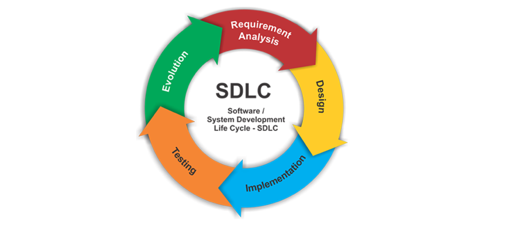

"A systems development life cycle is composed of a
number of clearly defined and
distinct work phases which are used by systems engineers and
systems developers to plan for, design, build, test, and deliver information systems. Like anything that is manufactured on an assembly
line, an SDLC aims to produce high-quality systems that meet or exceed customer expectations, based on customer requirements, by delivering systems
which move through each clearly defined phase, within scheduled time frames and cost estimates.[3] Computer systems are complex and often
(especially with the recent rise of service-oriented architecture) link multiple traditional systems potentially supplied by different
software vendors. To manage this level of complexity, a number of SDLC models or methodologies have been created, such as "waterfall";
"spiral"; "Agile software development"; "rapid prototyping"; "incremental"; and "synchronize and stabilize" ".